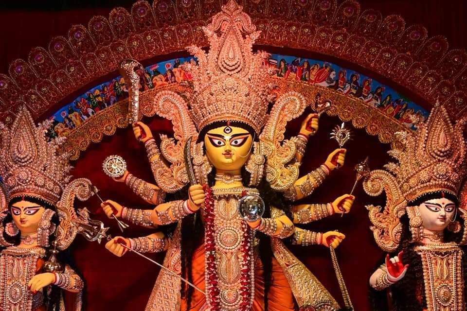

༺ Best Places In Kolkata ༻
1. Bagbazar Durga puja :
The Bagbazar Durga puja is one of the oldest pujas in Kolkata that is more than a century old. The Bagbazar Durga puja remains crowded all through the days of puja and is even more famous for the Durga idol. Apart from the striking idol and pandals, the carnival rides and stalls on the ground add more fun to the place. On the last day of Durga puja, which is Dashami, married women perform a very special ritual, Sindoor Khela. People from across the city visit the pandal on this specific day to witness the ritual.
Location : Near the Bagbazar Launch Ghat and Bagbazar Kolkata Circular Railway Station. The Metro railway station nearby is Shayambazar.
2. Kumartuli Park :
As compared to other pandals in Kolkata, Kumartuli Park is still younger. Durga puja here started in the year 1995. The puja here is famous because Kumartuli is the place in particular where the majority of the Durga idols are made by professional clay modelers who have been in this business for many generations. You can expect here something unique every year.
Location : Beside the river at Kumartuli Park. The railway station nearby is the Sovabazar Metro.
3. College Square :

One of the places to visit in Kolkata during Durga puja is College Square. The pandal at College Square is erected by the lake. The sparkling lights and the reflection of the pandal can be seen on the water. You can also witness a special kumara puja that is held here.
Location : 53 College Street, near Kolkata University. The railway stations at proximity are Mahatma Gandhi Road and Central Metro.
4. Mohammad Ali Park :

The Durga puja pandal and idol in Mohammad Ali Park are one of a kind. The puja commenced in 1969 and people from across the city come to this park to see the Durga idol. Each year they come up with some new themes.
Location : Central Kolkata.
5. Santosh Mitra Square :
This is one of the most popular Durga Puja pandals in Kolkata. Each year a different yet unique theme has kept Santosh Mitra Square one of the favorites among Puja hoppers in Kolkata. The Durga puja here rose to fame because of the outstanding artwork.
Location : Central Kolkata. The Metro Station nearby is Central.
6. Badamtala Ashar Sangha :
Badamtala Ashar Sangha is known for the innovative themes it comes up with every year. The pandal even won the creative excellence award in 2010. It is one of the most visited pandals in Kolkata that witnesses numbers of visitors every year.
Location : Nepal Bhattacharjee Street, Kalighat
7. Ballygunge Cultural Association
Ballygunge Cultural Association organized its first Durga Puja in 1951. The main attractions of this puja are the wide variety of art forms and traditional cultural programs. They try keeping the pandals environment-friendly.
Location : 57 Jatindas Road, Hemanta Mukherjee Sarani, Lake Terrace, Ballygunge
8. Suruchi Sangha :

The main attraction of Suruchi Sangha is the outdoor artsy decor. The pandal won an award in 2003 for being the best-decorated pandal. The craftsmanship of this pandal is something to admire. Each year their theme is based on a different state of India.
Locations : New Alipore
9. Ekdalia Evergreen :

Ekdalia Evergreen is known for the replicas of various temples from across the country that the pandals are modeled after. The lighting as well as décor of the pandal is famous in the city. One of the main things to do in Durga Puja in Kolkata is to visit Ekdalia Evergreen. You will also find the tallest Durga idol in Kolkata at this pandal.
Locations : Gariahat. The railway stations at proximity include Ballygunge and Kalighat Metro.
10. Jodhpur Park :
One of the biggest Durga Puja pandals that you will find in South Kolkata is in Jodhpur Park. They come up with various types of themes. At this pandal, you will be able to see creativity at its best.
Location : Jadavpur Thana, Jodhpur Park. The nearest railway station is Dhakuria.
11. Bosepukur Sitala Mandir :

Bosepukur Sitala Mandir is well-known for its unique and exceptional themes. They usually depict rural India. This pandal is one of the tourist attractions in Kolkata during Durga puja.
Location : Bosepukar, Kasba. The nearest railway station is Ballygunge.
Also You Can Check Out Diamond Harbour Durga Puja Pandels :
1. Shreevumi,
2. Sarat Boarding Sarbajanin Durga Puja,
3. Harindanga Durga Madir,
4. Young Fighters Club,
5. New Town Sarbojanin Durgotsab,
6. Diamond Harbour High School,
7. Deshopriyo Park,
8. Maitri Sangha Durga Puja Comitte,
9. Tridhara Sommiloni,
10. Singhi Parek Sarbojonin,
11. Hindusthan Park Sarbojonin Club,
12. Poddapukur Durga Puja,
13. Yobobindo club,
14. New Tarun Sangha,
15. Diamond HArbour Milloniun Club,
༺ শুভ শারদীয়ার শুভেচ্ছা ༻